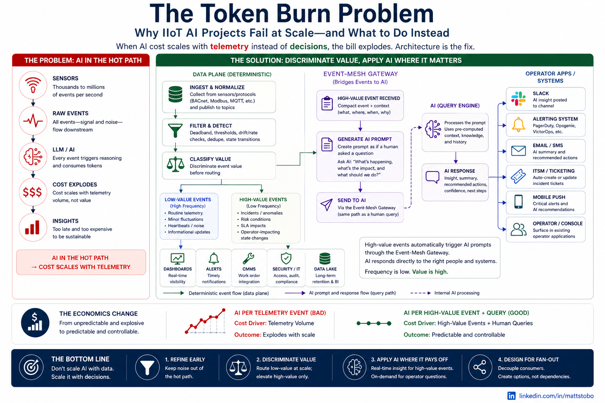

Keep the LLM off the firehose
Every unchanged temperature reading does not need a model call. Budget and latency stay predictable as fleet size grows.
High-volume MQTT is not an LLM input stream. This reference demo shows how to keep AI off the hot path, surface signal where operators need it, and apply generative models only when the business case is clear.
The problem

Most IIoT + AI pilots fail at scale because cost and latency grow linearly with sensor volume. The fix is architectural: deterministic processing first, agents second.
Value framework
Every unchanged temperature reading does not need a model call. Budget and latency stay predictable as fleet size grows.
Deadband and heartbeat logic suppress the bulk of MQTT traffic so downstream systems see meaningful change, not raw churn.
Zones, spikes, and fleet-wide critical fractions trigger alerts and workflows without waiting on inference.
Solace Agent Mesh answers operator questions and runs rare fleet automation over rollups and alerts — not per-reading streams.
A live HVAC-style fleet on Solace PubSub+ with ~99% MQTT noise reduction, rule-based detection, and SAM-powered analysis on demand. The live pipeline dashboard runs on AWS; these pages explain why it matters.